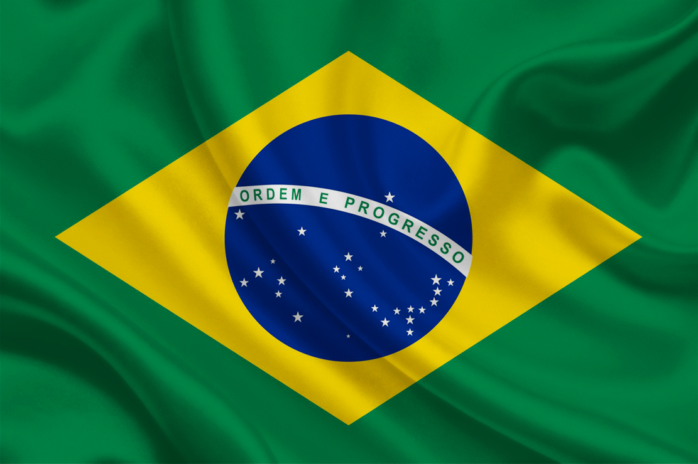
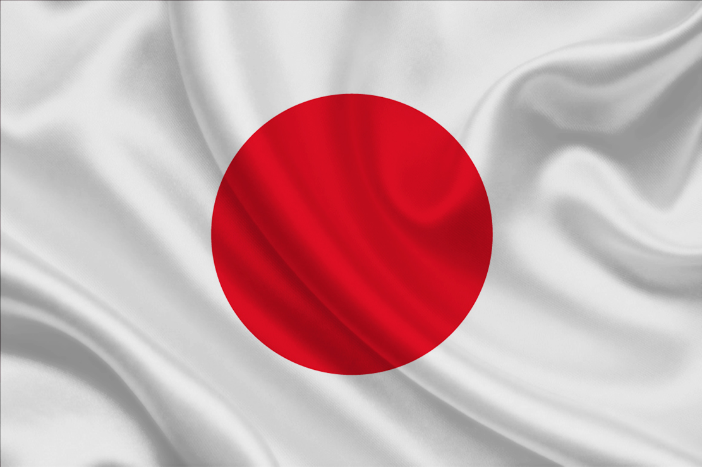

O Brasil teve sua origem em 1500, com a chegada dos portugueses liderados por Pedro Álvares Cabral.
Durante mais de três séculos, foi colônia de Portugal, período em que sua economia se baseou na exploração
de recursos naturais, como o pau-brasil, o açúcar e o ouro. A formação da sociedade brasileira ocorreu a partir
da mistura entre povos indígenas, africanos e europeus, criando uma das culturas mais diversas do mundo.
Em 1822, o Brasil conquistou sua independência e se tornou um império governado por Dom Pedro I.
Em 1889, ocorreu a Proclamação da República, marcando o início de uma nova fase política.
Ao longo do século XX, o país enfrentou períodos de instabilidade, incluindo a ditadura militar (1964–1985),
até consolidar sua democracia atual.
Hoje, o Brasil é o maior país da América do Sul, com grande destaque para sua biodiversidade, economia
diversificada e forte presença cultural no mundo, especialmente na música, esporte e culinária.
| Capital | População | Área | Moeda |
|---|---|---|---|
| Brasília | +200 milhões | 8,5 milhões km² | Real |
Os Estados Unidos foram formados a partir de treze colônias inglesas na América do Norte.
Em 1776, declararam independência da Inglaterra, dando origem a uma nova nação baseada em princípios
de liberdade e democracia. Durante o século XIX, o país expandiu seu território em direção ao oeste,
consolidando sua formação territorial.
Um dos momentos mais importantes de sua história foi a Guerra Civil (1861–1865), que resultou no fim da escravidão.
No século XX, os Estados Unidos participaram das duas guerras mundiais e se tornaram uma superpotência global,
exercendo grande influência política, econômica e cultural.
Atualmente, o país é referência mundial em tecnologia, ciência, entretenimento e economia, sendo uma das nações
mais influentes do planeta.
| Capital | População | Área | Moeda |
|---|---|---|---|
| Washington, D.C. | +330 milhões | 9,8 milhões km² | Dólar |

A França possui uma longa história marcada por monarquias e grandes transformações políticas.
Durante séculos, foi governada por reis até que, em 1789, ocorreu a Revolução Francesa, um dos eventos
mais importantes da história mundial, responsável por introduzir ideias de liberdade, igualdade e fraternidade.
No século XIX, o país passou por mudanças significativas, incluindo o governo de Napoleão Bonaparte,
que expandiu o poder francês pela Europa. No século XX, participou das duas guerras mundiais e teve papel
fundamental na reconstrução europeia.
Hoje, a França é uma das principais potências da Europa, destacando-se por sua cultura, arte, moda,
gastronomia e influência internacional.
| Capital | População | Área | Moeda |
|---|---|---|---|
| Paris | 67 milhões | 551 mil km² | Euro |

O Japão é um país asiático formado por ilhas e possui uma história marcada por longos períodos de isolamento,
nos quais desenvolveu uma cultura única e rica em tradições. Durante séculos, manteve-se fechado ao contato externo.
No final do século XIX, passou por um processo de modernização conhecido como Era Meiji, transformando-se em
uma potência industrial. No entanto, sua participação na Segunda Guerra Mundial trouxe consequências graves,
incluindo os bombardeios atômicos de Hiroshima e Nagasaki em 1945.
Após a guerra, o Japão se reconstruiu rapidamente e se tornou uma das maiores economias do mundo,
sendo referência global em tecnologia, inovação e organização social.
| Capital | População | Área | Moeda |
|---|---|---|---|
| Tóquio | 125 milhões | 377 mil km² | Iene |
A Alemanha teve sua unificação no século XIX e rapidamente se tornou uma potência europeia.
No século XX, teve papel central nas duas guerras mundiais, o que trouxe grandes consequências para o país.
Após a Segunda Guerra Mundial, foi dividida em Alemanha Ocidental e Oriental, separadas pelo Muro de Berlim,
símbolo da Guerra Fria. Essa divisão durou até 1990, quando ocorreu a reunificação do país.
Atualmente, a Alemanha é uma das maiores economias do mundo, destacando-se na indústria, tecnologia
e qualidade de vida, sendo uma das nações mais influentes da Europa.
| Capital | População | Área | Moeda |
|---|---|---|---|
| Berlim | 83 milhões | 357 mil km² | Euro |
Todos direitos reservados, Diego Lopes. CopyRight © 2026